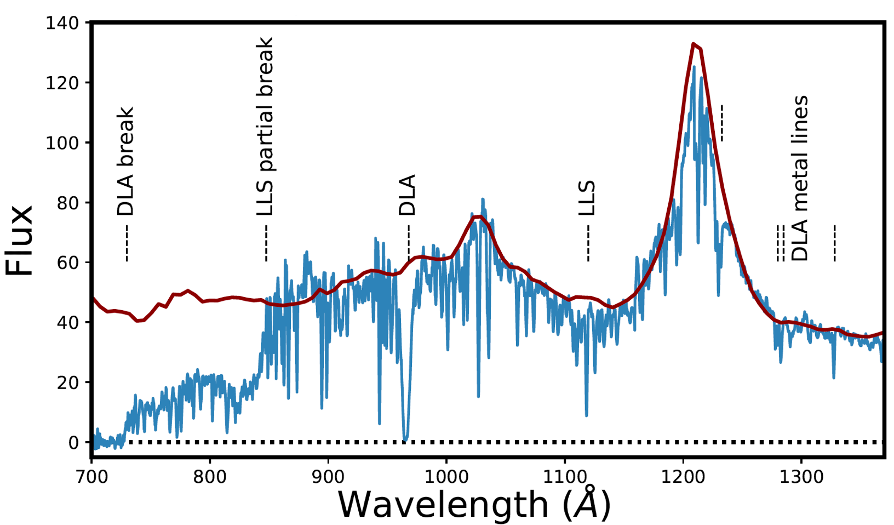
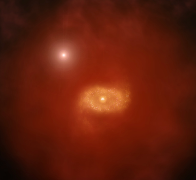
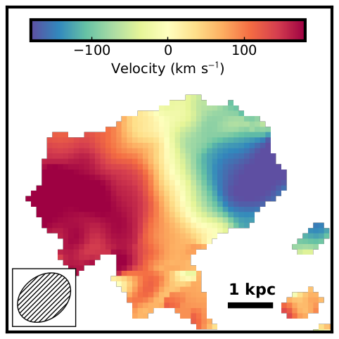
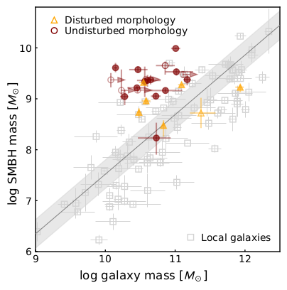

My Research
I study the formation of galaxies in the early universe. In
particular, I use quasars both as a way to locate massive galaxies
at very high redshift, and as a background source to study the
diffuse gas surrounding foreground galaxies through absorption line
spectroscopy. While the former allows me to study the formation of
some of the most massive galaxies that exists in our universe, the
latter provides a unique view of the average galaxy population at
high redshift. My research is roughly divided into three main
topics: studying atomic gas at high redshift, finding the galaxies
that are associated with this gas and studying the host galaxies of
high redshift quasars. In the below three sections, I provide a
quick overview and highlight some of the work I have contributed to
these topics.
Damped Lyman-α Absorbers

Using optical and near-infrared spectrographs, we can study the
spectra of high redshift quasars in great detail. A typical quasar
spectrum is shown in the figure on the left. Leftwards of the
Lyman-α emission of the quasar at 1215Å, you can see the
Lyman-α forest. This is a region where part of the light of
the quasar gets absorbed by foreground atomic hydrogen. Dense clumps
of gas will create more absorption and are known as Lyman limit
systems (LLS). The strongest absorbers show damping wings in their
Lyman-α absorption and are therefore called Damped
Lyman-α Absorbers (DLAs).
DLAs are particularly interesting, because they contain the bulk of
the atomic hydrogen in our Universe. DLAs have therefore been used
to constrain the evolution of this gas with cosmic time. In my 2016
paper, I used Hubble Space Telescope archival data to provide an
estimate of the cosmic density of atomic hydrogen at low redshift,
where only space-based telescopes can measure the Lyman-α
transition. Combining this result with results at higher redshift
reveals a steady decline in the amount of neutral atomic hydrogen as
the Universe ages. We have put this result in context with the
evolution of several other mass constituents of galaxies (i.e.,
stars, molecular gas, etc.) in Walter, Carilli, Neeleman et
al. (2020).
Using the metal lines associated with the DLA, we can also provide
an estimate of the metallicity, kinematics and the physical
conditions of the gas. The latter two were the main topics of my PhD
thesis and my 2013 and 2015 papers. In my 2013 paper, I showed that
the metallicity of the DLA is correlated with both the redshift and
width of its absorption lines, and in my 2015 paper, I used the
fine-structure lines of singly ionized carbon and silicon to
constrain the temperature and density of the gas.
Finding and Characterizing Absorption-Selected Galaxies
We expect that DLAs are closely associated with galaxies. This
association is based both on the predictions of simulations as well
as observational evidence. In the local universe, we see that atomic
hydrogen column densities giving rise to DLAs are solely found in
the disks of galaxies, and cosmological simulations predict that
DLAs occur around the full range of the simulated galaxy
population. DLAs therefore provide a unique opportunity to study
normal, high-redshift galaxies without any a-priori knowledge of the
emission properties of the galaxy.
These absorption-selected galaxies provide a complimentary picture
of the galaxy population compared to galaxies found in typical high
redshift galaxy surveys.

Over the past three decades, a multitude of studies have attempted
to find the optical galaxy counterparts to DLAs, but often with
little success. This limited success has been attributed to the
expected faintness of absorption-selected galaxies. Since DLAs are
associated with the full galaxy population, many DLAs are associated
with galaxies that are too faint even for the world's best
telescopes. By pre-selecting DLAs by their metallicity, recent
studies have increased the detection rate. This is because mass and
metallicity are expected to correlate in galaxies and more massive
galaxies are easier to detect. Together with better instrumentation,
this implies we now have an excellent way forward to discover the
connection between galaxies and absorbers.
However, optical telescopes are not the only instrumentation that we
can use. Capitalizing on the remarkable sensitivity of the Atacama
Large Millimeter Array (ALMA), I have set out to detect the galaxies
associated with high-metallicity DLAs in the (sub-)millimeter
regime. At these wavelengths, we can detect the dust continuum
emission and emission of far-infrared emission lines (in particular
[CII] 158 μm emission) from the gas within the galaxy. This
research has been extremely successful resulting in the first
detections of absorption-selected galaxies in the millimeter regime,
as well as the highest redshift absorption-selected galaxies. My
2017 study, published in Science, of two absorption-selected
galaxies was covered by a press
release from the National Radio Astronomy Observatory (NRAO) and
includes a cool video
describing this research. Subsequent observations with ALMA have now
revealed a sample of over 20 absorption-selected galaxies, more than
doubling the previous number of known absorption-selected
galaxies. The coming decade therefore promises to finally uncover
the connection between DLAs and galaxies.

Besides detecting the galaxies, ALMA in its more extended
configuration can also resolve the emission arising from the
interstellar medium of absorption-selected galaxies. In my 2020
paper, published in Nature, I discuss ALMA observations of the
ionized carbon emission ([CII] 158 μm) from one of these
galaxies. In this paper, I show that the emission arises from a cold
disk rotating at a similar speed as our own Milky Way. The existence
of a dynamically cold disk galaxy at these redshifts is exciting,
because it challenges our understanding of how gas can accrete onto
a galaxy. The accreted gas must have been cool or cooled quickly in
order to form a dynamically cold disk galaxy. The association of
this disk galaxy to the DLA gives a unique insight into the
kinematics of the atomic gas probed by the absorber, and it reveals
that for this single system the atomic gas is co-rotating with the
disk. We named this disk galaxy the 'Wolfe' disk, in honor of my
thesis advisor, who argued for the existence of these galaxies, and
this article was covered extensively by the popular press as well as
a press
release by the NRAO as well as another cool video. Future resolved
observations of absorption-selected galaxies can provide an exciting
opportunity to compare the flow of gas within and outside the galaxy
in order to explore the role this gas plays in the formation of galaxies.
Quasar Host Galaxies
Quasars are some of the brightest non-transient objects in the Universe, and
they have been detected well into the epoch of reionization, when the Universe
was less than one billion years old. Optical and near-infrared spectroscopy
reveal that the most luminous quasars are powered by billion-solar-mass black
holes. Locally, black hole mass correlate with the mass of the galaxy and if
this correlation holds at high redshift, then we expect luminous quasars to
trace massive quasar host galaxies. Quasars therefore provide a unique
opportunity to study massive galaxies in the early Universe.
Studying the stellar light from the galaxies associated with quasars remains
difficult, because the light from the quasar outshines the light from the stars
in the quasar host galaxies. Directly detecting this stellar light will have to
await observations with the next generation near-infrared telescopes like the
James Webb Space Telescope and 30-m class telescopes such as
the European Extremely Large Telescope. Fortunately the quasar is much dimmer
at millimeter wavelengths; allowing us to search for the continuum emission
emitted by the dust as well as emission lines emitted by the metals within the
interstellar medium of the galaxy. Using the excellent capabilities of ALMA, we
can now detect emission lines from quasar host galaxies well into the epoch of
reionization. Remarkably, these observations reveal that a fraction of these
quasar host galaxies have massive, dusty companions. This is an indication
that these quasar reside in large overdensities, as predicted by simulations.
In Neeleman et al. (2019), I describe higher resolution observations of the
fields surrounding five quasars with known companions. These observations
reveal little distinction between the quasar host galaxy and their companion,
which indicates that the quasar is not significantly affecting the rest-frame
far-infrared properties of its host galaxy.

To further explore the host properties of high redshift quasar galaxies. We have
built a sample of 27 high redshift quasar host galaxies that have been imaged
at 0.25" resolution with ALMA. In the first paper in a series of three papers,
we show that the optical position of the quasar is centrally located in the
quasar host galaxy, and none of the quasar properties correlates with the
rest-frame far-infrared properties. This further supports the assertion that
the quasar does not affect the ALMA observations. In the second paper, we show
by carefully stacking the observations that the far-infrared emission is
extended beyond the emission we see in individual observations, but this
emission is consistent with simulations that predict emission at these scales
from an extended component. Finally in the last paper, we model the kinematics
of the galaxy using the fitting code Qubefit. We find
that about a third of the galaxies have kinematics consistent with a disk and
a third show evidence of ongoing merger activity. The final third of galaxies
show turbulent motions consistent with the expectations of a bulge. Using these
kinematics we can estimate the dynamical mass of the galaxies. This reveals that
these galaxies systematically fall above the local black hole - gas mass
relation, as shown in the figure. This could mean that for these luminous
quasars, the black hole masses grew faster than their host galaxies.
It is exciting to consider that the typical resolution in the above sample of
0.25" is not the best resolution that ALMA can achieve. We have already obtained
spectacular imaging of a quasar host galaxy at 0.04" resolution
(Venemans, Neeleman et al. 2019). More imaging at this resolution are on the
horizon allowing us to explore the interstellar medium at exquisite resolution,
and we might even be able to resolve the sphere of influence of the black hole,
which would provide an independent estimate of the black hole mass.